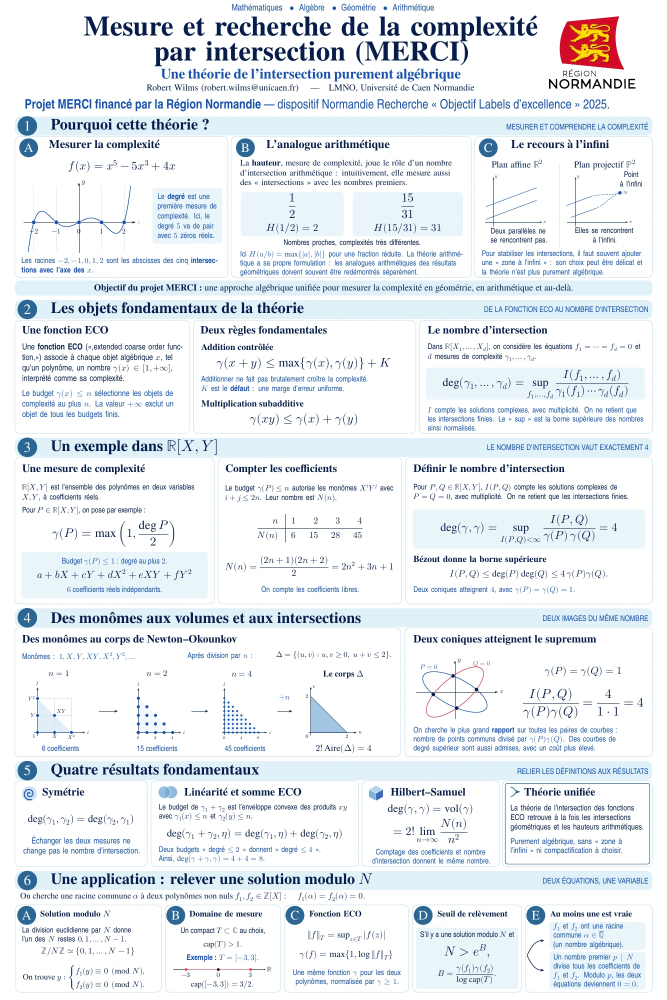

04 / About & contact
Between numbers
and shapes.
I’m a postdoctoral researcher at the Laboratoire de Mathématiques Nicolas Oresme, Université de Caen Normandie.
I joined LMNO in 2023. My research ranges across rational points, heights, arithmetic intersection theory, abelian varieties, moduli spaces and Riemann surfaces.
I completed my PhD at the University of Bonn in 2016 under the supervision of Gerd Faltings.
Mesure et recherche de la complexité par intersection
Since 2025, I have been the principal investigator of this ERDF project, funded by Région Normandie.
A visual introduction to the project
This poster introduces ECO functions and intersection theory through polynomials, convex geometry and arithmetic examples.
In French · one-page poster
Explore complexity through ECO functions →
Open the full poster ↗Le projet MERCI en français
Comment mesurer la complexité d’un objet algébrique, puis comprendre ce qui se passe lorsque plusieurs contraintes se rencontrent ? Le projet MERCI développe une approche de la théorie de l’intersection fondée sur des fonctions de complexité, appelées fonctions ECO.
Le degré d’un polynôme en fournit un premier exemple : borner le degré sélectionne un espace de polynômes. En faisant croître cette borne, on peut relier le nombre de paramètres algébriques au volume d’un corps convexe. Le projet cherche à réunir dans un même cadre des situations géométriques et arithmétiques.
Mené au Laboratoire de Mathématiques Nicolas Oresme de l’Université de Caen Normandie, MERCI signifie « Mesure et recherche de la complexité par intersection ». Depuis 2025, j’en suis le responsable scientifique. Le projet bénéficie d’un financement du FEDER, attribué par la Région Normandie.
Repères et ressources
— Début de ma responsabilité scientifique du projet MERCI.
— Une affiche en français présente le projet à travers des exemples de polynômes, de corps convexes et de géométrie arithmétique. Le laboratoire interactif permet d’en explorer quelques idées.